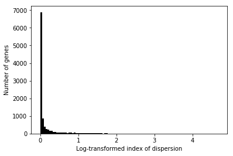

Mean/dispersion estimation
Introduction
We take a modular approach to call QTLs:
- Estimate a mean and a dispersion for each individual
- Treat the mean/dispersion as continuous phenotypes and perform QTL mapping
Here, we solve (1).
- We implement CPU-based ML estimation
- We estimate per-gene indexes of dispersion accounting for the fact that data came from multiple individuals
Model specification
Let \(r_{ijk}\) denote the number of molecules for individual \(i\), cell \(j\), gene \(k\). Let \(R_{ij}\) denote a size factor for each cell. As a first pass, define \(R_{ij} = \sum_k r_{ijk}\).
Following Hilbe 2012, we derive the negative binomial as a Poisson-Gamma mixture:
\[ r_{ijk} \sim \text{Pois}(R_{ij} \mu_{ik} u_{ijk}) \]
\[ u_{ijk} \sim \text{Gamma}(\phi_{ik}^{-1}, \phi_{ik}^{-1}) \]
Here, \(\mu_{ik}u_{ijk}\) denotes relative expression (Pachter 2011). Marginalizing out \(u\) yields the negative binomial distribution, with log likelihood:
\[ \ln p(r_{ijk} \mid R_{ij}, \mu_{ik}, \phi_{ik}) = r_{ijk} \ln\left(\frac{R_{ij}\mu_{ik}\phi_{ik}}{1 + R_{ij}\mu_{ik}\phi_{ik}}\right) - \phi_{ik}^{-1} \ln(1 + R_{ij}\mu_{ik}\phi_{ik}) + \ln \Gamma(r_{ijk} + \phi_{ik}^{-1}) - \ln \Gamma(r_{ijk} + 1) - \ln \Gamma(\phi^{-1}) \]
We have multiple data points (30-200 cells) per mean/dispersion parameter, so simply minimizing the negative log likelihood should give reasonable estimates.
We additionally account for zero-inflation, by letting \(\pi_{ik}\) denote the probability of observing an excess zero (not arising from the negative-binomial).
Then, the log-likelihood of the data is:
\[ \ln p(r_{ijk} \mid \cdot) = \ln(\pi_{ik} + (1 - \pi_{ik}) p(r_{ijk} \mid R_{ij}, \mu_{ik}, \phi_{ik}))\ \text{if}\ r_{ijk} = 0 \] \[ \ln p(r_{ijk} \mid \cdot) = \ln(1 - \pi_{ik}) + \ln p(r_{ijk} \mid R_{ij}, \mu_{ik}, \phi_{ik})\ \text{otherwise} \]
numpy/scipy implementation
Optimize the negative log-likelihood.
import scipy.optimize as so def log(x): """Numerically safe log""" return np.log(x + 1e-8) def sigmoid(x): """Numerically safe sigmoid""" lim = np.log(np.finfo(np.float64).resolution) return np.clip(sp.expit(x), lim, -lim) def zinb(theta, x, size): theta, dropout = theta[:2], sigmoid(theta[2]) case_zero = log(dropout + (1 - dropout) * np.exp(-nb(theta, x, size))) case_non_zero = log(1 - dropout) - nb(theta, x, size) return -np.where(x < 1e-8, case_zero, case_non_zero).mean() def nb(theta, x, size): mean, inv_disp = np.exp(theta) mean *= size assert mean.shape == x.shape return -(x * log(mean / inv_disp) - x * log(1 + mean / inv_disp) - inv_disp * log(1 + mean / inv_disp) + sp.gammaln(x + inv_disp) - sp.gammaln(inv_disp) - sp.gammaln(x + 1)).mean()
Use this to check the parameter estimation for a particular gene/individual.
def extract_data(ind, gene): with sqlite3.connect('/project2/mstephens/aksarkar/projects/singlecell-qtl/browser/browser.db') as conn: umi = pd.read_sql("""select umi.value, annotation.size from umi, annotation where annotation.chip_id == ? and gene == ? and umi.sample == annotation.sample;""", con=conn, params=(ind, gene)) return umi
Shard the data to parallelize over nodes. During this pass, write the data out to the database. Important: we need to use the actual number of molecules detected rather than the sum of QC'ed counts as the size factor.
annotations = pd.read_table('/project2/mstephens/aksarkar/projects/singlecell-qtl/data/scqtl-annotation.txt') annotations['sample'] = annotations.apply(lambda x: '{chip_id}.{experiment:08d}.{well}'.format(**dict(x)), axis=1) annotations['size'] = annotations['mol_hs'] annotations = annotations[['sample', 'chip_id', 'size']] with sqlite3.connect('/project2/mstephens/aksarkar/projects/singlecell-qtl/browser/browser.db') as conn: annotations.to_sql(name='annotation', con=conn, if_exists='replace') conn.execute('create index ix_annotation on annotation(chip_id, sample);') keep_samples = pd.read_table('/project2/mstephens/aksarkar/projects/singlecell-qtl/data/quality-single-cells.txt', index_col=0, header=None) keep_genes = pd.read_table('/project2/mstephens/aksarkar/projects/singlecell-qtl/data/genes-pass-filter.txt', index_col=0, header=None) keep_genes = keep_genes[keep_genes.values].index i = 0 with sqlite3.connect('/project2/mstephens/aksarkar/projects/singlecell-qtl/browser/browser.db') as conn: conn.execute('drop table if exists umi;') for chunk in pd.read_table('/project2/mstephens/aksarkar/projects/singlecell-qtl/data/scqtl-counts.txt.gz', index_col=0, chunksize=1000): print('Processing chunk {}'.format(i)) chunk = (chunk .loc[:,keep_samples.values.ravel()] .filter(items=keep_genes, axis='index')) if not chunk.empty: chunk = (chunk .reset_index() .melt(id_vars='gene', var_name='sample') .merge(annotations, on='sample') .sort_values(['gene', 'chip_id', 'sample'])) chunk.to_csv('/scratch/midway2/aksarkar/singlecell/density-estimation/chunk-{}.txt.gz'.format(i), columns=['gene', 'chip_id', 'sample', 'value', 'size'], compression='gzip', sep='\t') chunk[['gene', 'sample', 'value']].to_sql(name='umi', con=conn, index=False, if_exists='append') i += 1 conn.execute('create index ix_umi on umi(gene, sample);')
Process each chunk in parallel.
def fit_gene(chunk): res0 = so.minimize(nb, x0=[0, 0], args=(chunk[:,0], chunk[:,1])) pi0 = (chunk[:,0] == 0).sum() / chunk.shape[0] res = so.minimize(zinb, x0=list(res0.x) + [sp.logit(pi0 + 1e-8)], args=(chunk[:,0], chunk[:,1])) # Log likelihood of ZINB vs. NB. We need to flip signs again llr = chunk.shape[0] * (res0.fun - res.fun) if llr < 1: # This isn't a likelihood ratio test. Numerically, our implementation of # ZINB can't represent pi = 0, so we need to use a separate implementation # for it log_mu, neg_log_phi = res0.x logit_pi = -np.inf else: log_mu, neg_log_phi, logit_pi = res.x mean_by_sample = chunk[:,1].ravel() * np.exp(log_mu) var_by_sample = mean_by_sample + np.square(mean_by_sample) * np.exp(-neg_log_phi) mean_by_ind = mean_by_sample.mean() var_by_ind = (np.square(mean_by_sample - mean_by_ind) + var_by_sample).mean() return [log_mu, -neg_log_phi, logit_pi, mean_by_ind, var_by_ind] def compute_breaks(chunk, by_ind=False): # Each subproblem has fixed size, so we can just split on integer indices # (instead of grouping) num_genes = len(set(chunk['gene'])) num_samples = len(set(chunk['sample'])) breaks = num_samples * np.arange(num_genes).reshape(-1, 1) if by_ind: num_samples_per_ind = chunk.iloc[:num_samples]['chip_id'].value_counts().sort_index().values # This can't be written += because of broadcasting breaks = breaks + np.cumsum(num_samples_per_ind).reshape(1, -1) else: # We need to get the right end point of each subproblem (exclusive) breaks += num_samples return breaks.ravel()
<<zinb-imports>> import argparse import gzip import os import multiprocessing as mp import sqlite3 <<np-zinb-impl>> <<process-chunk-impl>> with mp.Pool() as pool: chunk = pd.read_table('/scratch/midway2/aksarkar/singlecell/density-estimation/chunk-{}.txt.gz'.format(os.getenv('SLURM_ARRAY_TASK_ID'))) breaks = compute_breaks(chunk, by_ind=True) res = pool.map(fit_gene, np.split(chunk[['value', 'size']].values, breaks[:-1])) with gzip.open('/scratch/midway2/aksarkar/singlecell/density-estimation/result-{}.txt.gz'.format(os.getenv('SLURM_ARRAY_TASK_ID')), 'wt') as f: for b in breaks: gene, ind = chunk.iloc[b - 1][['gene', 'chip_id']] print(gene, ind, *res.pop(0), file=f)
sbatch --partition=broadwl --job-name="np-zinb" --mem=4G -a 0-20 -n1 -c28 --exclusive #!/bin/bash source activate scqtl python /scratch/midway2/aksarkar/singlecell/np-zinb.py
Populate the database.
with sqlite3.connect('/project2/mstephens/aksarkar/projects/singlecell-qtl/browser/browser.db') as conn: conn.execute('drop table if exists params;') for i in range(20): for chunk in pd.read_table('/scratch/midway2/aksarkar/singlecell/density-estimation/result-{}.txt.gz'.format(i), sep=' ', header=None, chunksize=1000): chunk.columns = ['gene', 'ind', 'log_mu', 'log_phi', 'logodds', 'mean', 'var'] chunk.to_sql(name='params', con=conn, index=False, if_exists='append') conn.execute('create index ix_params on params(gene, ind);')
Genome-wide distribution of dispersion
The index of dispersion for observed data \(r_{ijk}\) at gene \(k\) is:
\[ D_k = \frac{V[r_{ijk}]}{E[r_{ijk}]} \]
where expectations (variances) are taken over individuals \(i\) and cells \(j\).
Let \(g_{ijk}\) denote the zero-inflated negative binomial density as defined above. Then, we have:
\[ r_{ijk} \sim \sum_{ijk} \frac{1}{N} g_{ijk}(\cdot) \]
Fixing gene \(k\), the mixture density has expectation:
\[ \mu_k = \frac{1}{N} \sum_{ijk} E_{g_{ijk}}[r_{ijk}] \]
and variance (Frühwirth-Schnatter 2006):
\[ \sigma^2_k = \frac{1}{N} \sum (E_{g_{ijk}}[r_{ijk}] - \mu)^2 + V_{g_{ijk}} [r_{ijk}] \]
Fixing individual \(i\) and cell \(j\), we have:
\[ E[r_{ijk}] = (1 - \pi_{ik}) R_{ij} \mu_{ik} \]
\[ V[r_[ijk]] = (1 - \pi_{ik}) \left(R_{ij} \mu_{ik} + (R_{ij} \mu_{ik})^2 \phi_{ik}\right) \]
Read the estimated parameters, throwing out individuals with fewer than 50 cells.
Compute the index of dispersion as described above. Use the sharded results to parallelize. Important: we parameterized in terms of inverse dispersion, so we need to flip signs here.
<<zinb-imports>> import multiprocessing as mp import sqlite3 def process_gene(chunk): global annotation gene, ind, *_ = chunk.iloc[0] if ind in annotation['chip_id']: exp_value = annotation[annotation['chip_id'] == ind]['size'] * np.exp(chunk['log_mean']) var = exp_value + exp_value * exp_value * np.exp(-g['log_disp']) gene_mean = exp_value.mean() gene_var = (np.square(exp_value - gene_mean) + var).mean() return else: return {} with mp.Pool() as pool: with sqlite3.connect('/project2/mstephens/aksarkar/projects/singlecell-qtl/browser/browser.db') as conn: annotation = pd.read_sql('select * from annotation group by chip_id having count(distinct sample) >= 50;', conn) chunk = pd.read_table('/scratch/midway2/aksarkar/singlecell/density-estimation/result-{}.txt.gz'.format(os.getenv('SLURM_ARRAY_TASK_ID')), header=None) chunk.columns = ['gene', 'ind', 'nb_log_mean', 'nb_log_disp', 'nb_success', 'zinb2_log_mean', 'zinb2_log_disp', 'zinb2_logodds', 'zinb2_success', 'llr'] chunk['log_mean'] = np.where(chunk['llr'] < 1, chunk['nb_log_mean'], chunk['zinb2_log_mean']) chunk['log_disp'] = np.where(chunk['llr'] < 1, chunk['nb_log_disp'], chunk['zinb2_log_disp']) # Subproblems have fixed size num_genes = len(set(chunk['gene'])) num_inds = len(set(chunk['chip_id'])) # Get the right endpoints (exclusive) breaks = num_inds * np.arange(1, num_genes + 1) res = pd.DataFrame.from_dict(pool.map(process_gene, np.split(chunk[['gene', 'ind', 'log_mean', 'log_disp']].values, breaks[:-1]))) res.to_csv('/scratch/midway2/aksarkar/singlecell/density-estimation/dispersion-index-{}.txt.gz'.format(os.getenv('SLURM_ARRAY_TASK_ID')), compression='gzip', sep='\t')
sbatch --partition=broadwl --job-name="np-zinb" --mem=4G -a 0-20 -n1 -c28 --exclusive #!/bin/bash source activate scqtl python /scratch/midway2/aksarkar/singlecell/np-zinb.py
Plot the distribution of dispersions.
plt.clf() plt.hist(dispersion[np.isfinite(dispersion)], bins=50, color='k') plt.xlabel('Index of dispersion') _ = plt.ylabel('Number of genes')

Write out the computed dispersions.
dispersion[np.isfinite(dispersion)].to_frame().to_csv('/scratch/midway2/aksarkar/singlecell/index-dispersion-by-gene.txt.gz', compression='gzip', header=False, sep='\t')